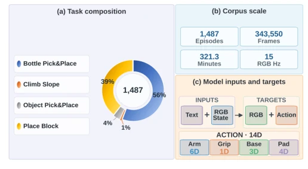
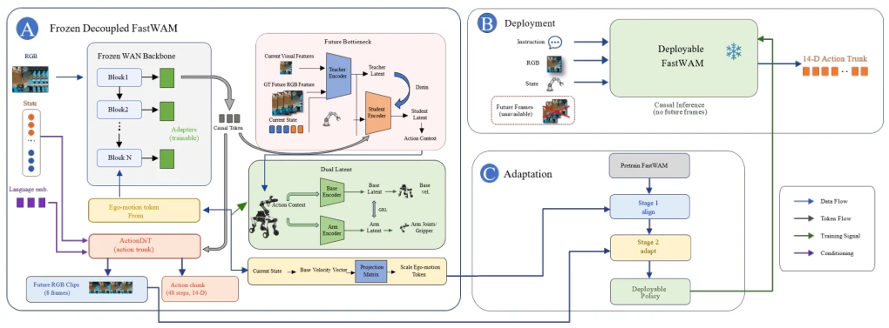
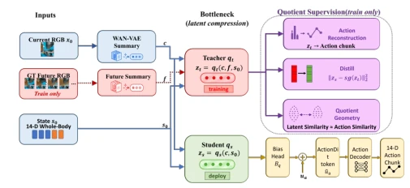
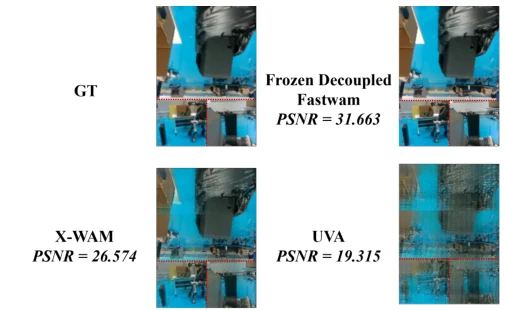
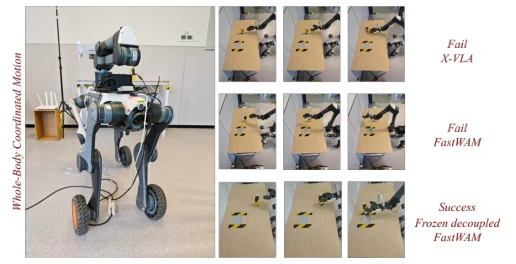

DECOWAM performs a "major surgery" on mobile manipulation world models, the core lies in "separation": modeling chassis motion, manipulator operation, and camera ego-motion separately. This approach is indeed necessary in the mobile manipulation field, as the camera moves with the legs, and image motion mixes scene dynamics and ego-motion. It is fine-tuned based on FastWAM, with extremely high parameter efficiency, training only 25M parameters, and stable real-world performance. But don't get too excited, this is essentially a "shell" around a large model; although the ARMDOG dataset synchronizes multimodal data, task types focus on Box operations, and generalization to complex scenes depends on future work. Moreover, it relies on privileged future distillation, and training costs are not low. Overall, it is a solid engineering improvement, but still far from general embodied intelligence, as it does not solve the fundamental problem of "how to learn to walk from video", only making video prediction slightly more accurate, and has strong dependency on specific hardware.
The long-term goal of embodied AI is to enable robots to both move and manipulate. Existing VLA models such as RT-1/2 [2], OpenVLA [3], π0 [4] perform well on fixed bases, but mobile manipulation is completely different. The camera moves with the chassis, causing image motion to mix scene dynamics and ego-motion. The action space is also multi-rate, with arm high-frequency control and chassis low-frequency navigation. Existing world models [8][9] mostly do not explicitly distinguish these factors, making it difficult for models to handle navigation and grasping simultaneously. The lack of the ARMDOG dataset also exacerbates this problem; existing data [20][21] lack synchronized legged mobile manipulation data. Furthermore, fixed-base models cannot handle chassis speed as a dual role of observation and action, making direct policy transfer on mobile platforms prone to failure; it requires explicit modeling of the chassis-camera coupling relationship, otherwise control drift will occur.

Fig. 3. Composition and model-facing structure of ARMDOG. (a) Episode distribution across four task families in the quality-filtered corpus: Bottle Pick&Place (56%), Place Block (39%), Object Pick&Place (4%), and Climb Slope (1%). (b) Corpus scale after timestamp alignment and quality filtering: 1,487 episodes, 343,550 RGB frames, 321.3 minutes, and a 15 Hz frame rate. (c) Model interface: text, current RGB, and robot state form the inputs, while future RGB and a 14-D action are prediction targets. The action vector separates 6-D arm, 1-D gripper, 3-D base-velocity, and 4-D loader-padding channels.
Overall, it adopts two-stage training. The first stage aligns FastWAM to ARMDOG data. The second stage freezes the backbone and trains only the residual adapter. There are three core innovations: 1. Action-equivalent future bottleneck: Through teacher-student distillation, future visual information is compressed into causal-predictable latents, improving action prediction. 2. Base-arm decoupling: Using adversarial learning to separate navigation and manipulation latents, avoiding semantic confusion. 3. Ego-motion aware video condition: Explicitly inputting chassis speed tokens, allowing the video branch to directly understand the source of camera motion. In terms of data, ARMDOG provides strictly synchronized 15Hz video, 14-dimensional state, and language instructions. Training objectives include video reconstruction, action reconstruction, geometry preservation, and adversarial decoupling loss. During deployment, the teacher path is removed, keeping only causal inference to ensure real-time performance. Parameters are only 25M, far lower than full fine-tuning.

Fig. 1. DECOWAM architecture, training, and deployment. (A) A frozen WAN backbone is augmented with trainable residual adapters, a teacher–student future bottleneck, separated base/arm latents, and base-velocity ego-motion conditioning; ActionDiT produces future RGB clips and a 48-step, 14-D action chunk. (B) Deployment removes future-frame inputs and the privileged teacher path, yielding strictly causal 14-D action inference. (C) Staged training first aligns pretrained FastWAM to ARMDOG and then adapts the decoupled modules to obtain the deployable policy.

Fig. 2. Future-information bottleneck. A privileged teacher observes current and future visual summaries, whereas the causal student observes only the current summary and robot state. Only the student is retained during deployment.
Using the ARMDOG dataset, containing 1487 episodes. Baselines include FastWAM, X-VLA, Motus, etc. Metrics cover video quality (MSE, PSNR) and action accuracy (MSE). Compared to FastWAM, DECOWAM reduces action MSE by 21.7% and video MSE by 15%. In 79 real-world closed-loop tests, DECOWAM achieved a task success rate of 58.2%, with chassis displacement robustness significantly better than other models. Ablation experiments prove that both the future bottleneck and decoupling module are effective. Compared to X-VLA, DECOWAM can predict future video while maintaining action accuracy, providing stronger scene perception capabilities. In real-world results, DECOWAM performed best in the transport phase after grasping, proving the effectiveness of full-body coordination, and completion time was 16 seconds faster than FastWAM.

Fig. 4. Qualitative comparison with WAM references on one fixed ARMDOG replay sample. The panels show the ground-truth future RGB montage and predictions produced through each model’s native interface. Red dashed lines mark camera-view boundaries. In this example, DECOWAM better preserves workspace geometry and object layout, while several references accumulate blur or viewpoint drift.

Fig. 5. Representative whole-body coordinated-motion trials on the quadruped– arm platform. The three frames in each row progress from left to right. X-VLA (top) and the original FastWAM (middle) exhibit unintended base motion when a static pose is required and fail to finish the interaction, whereas DECOWAM (bottom) succeeds. The example qualitatively complements the aggregate WBCM-SR results in Table V(b).